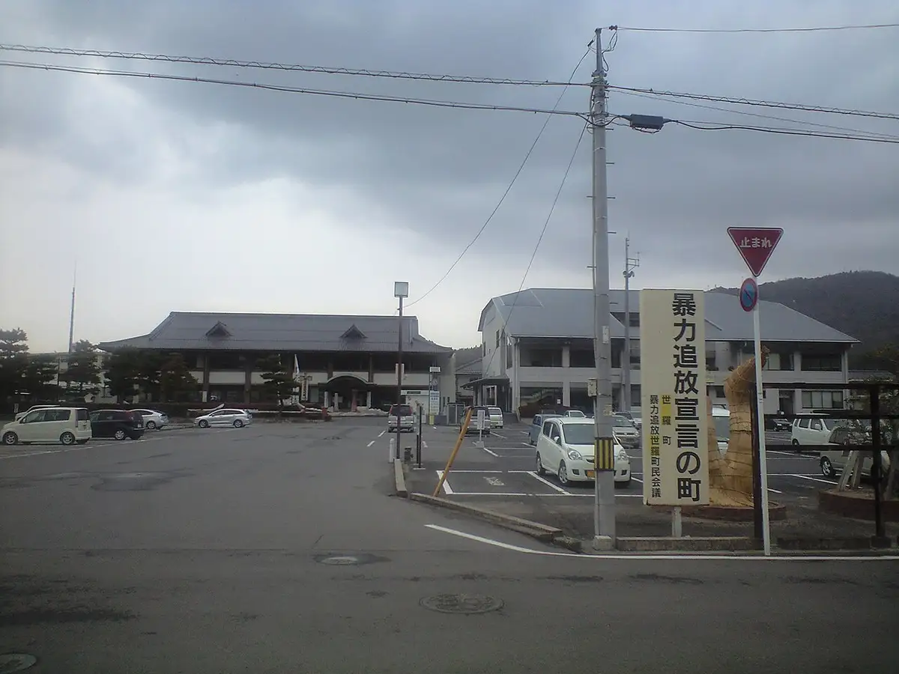
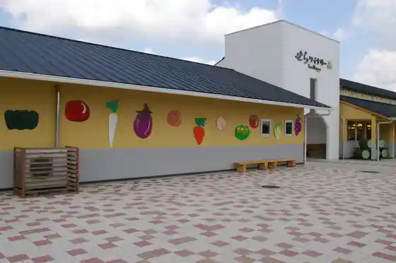
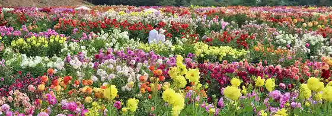
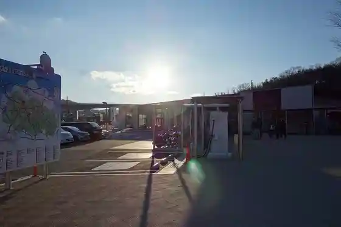
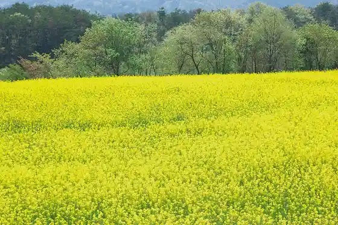

Sera
Sera · Hiroshima
Sera
Highlighted on the Hiroshima map.

Stay
Suzuran Hotel Kihara
Dining
Yakiniku Ejan Sera Mise
Ryoriya Hibi
Minami Ra
Oheso Kafe Ando Bekarii
Marushie
Famiriiresutoran Tainii
Nojo Resutoran
Teuchi Chisoba Ko no Tori
CAFE Yuyu Kan Kan
Yoshihisa Sushi
pakan
Hyuga Kusa
Yofu Izakaya Samban
Kitchin Kazamidori
Nakada Ya
Shariki
Onsen
Taishu Engeki Sera Onsen Public Bath
Sera Kaori Yu Land Public Bath
Sights
Sera Wainarii

Sera Highlands Nojo

Roadside Station Sera

Hanayume Village

Kojo Yama Lookout